Sporup
Höhe: 135 cm
Breite: 75 cm
Dicke: 32 cm
Runenhöhe: 10 - 12,5 cm
Runenstein :
Thorkil Svidbalke errichtete diesen Stein zum Andenken an seinen Vater Toke, der (zusammen mit ... Schiff besaß?).

71 - Sporup - Letztes Update 24.09.2025
Listennummer : DR kein / DK MJy 83
| Navidaten: 56.22634 9.82510 oder: Sporup Kirkevej 79, 8472 Sporup |
Transliteration: þurkil : suiþbalki : ris(þ)- --in : þinsi (:) ...|R : tuka : (f)a--- --n | iR : s(k)...
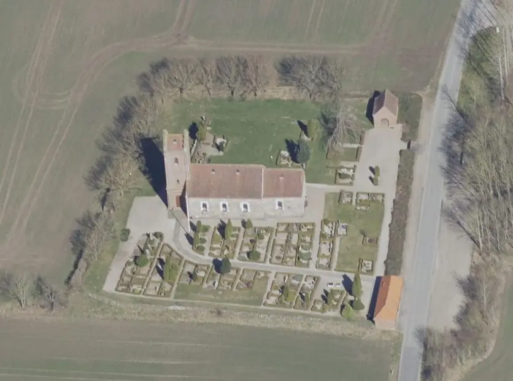
Dies ist ein Luftfoto vom 02.04.2023 von Skråfoto, das die Kirche von Sporup zeigt. Skråfoto ist eine Webanwendung, die von Klimadatastyrelsen weltweit kostenlos bereitgestellt wird - Freie Nutzung unter Beachtung der Lizenz: CC BY 4.0. Die Aufnahmen werden alle zwei Jahre erneuert und neben einer Senkrechtaufnahme wird ein Schrägbild aus jeder Himmelsrichtung angeboten, das man über eine Adresssuche aufrufen kann.
Es handelt sich hier um einen (beschädigten) Stein aus Granit, der erst am 30.08.1966 bei einer Kirchenrestaurierung (Einbau einer Zentralheizung) gefunden wurde. Er fand sich unter dem Fußboden, unmittelbar vor der zugemauerten Südtür. Heute steht er im Turmhaus vor dem Kircheneingang. Er trägt außer der Runeninschrift, die den seltenen Beinamen "Svíðbalki" überliefert, noch eine unförmige, eigentümliche Schlange (rechts oben), die laut Erik Moltke (*04.04.1901 - 19.10.1984, Runologe, Historiker - link-LIVES)
 Bildquelle: Scan von Buchumschlag "Runerne i Danmark og ders
oprindelse" - Erik Moltke - 1976 - Lizenz:
CC-BY-SA
Bildquelle: Scan von Buchumschlag "Runerne i Danmark og ders
oprindelse" - Erik Moltke - 1976 - Lizenz:
CC-BY-SA
wohl von einem Unkundigen geritzt wurde. Der Runeninschrift kann auf das Jahr 970-1020 datiert werden.
Die Inschrift beginnt in der unteren rechten Ecke und verläuft entlang der Steinkontur nach oben. Danach wird die Zeile in der Mitte von unten nach oben gelesen. Den Abschluss bilden die wenigen Runen links oben unterhalb der Schlangenritzung nach unten gelesen.
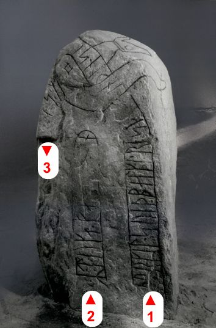
Bildquelle: Fotograf Erik Moltke - Digitale Sammlung Nationalmuseum Kopenhagen - Lizenz: CC-BY-SADer Name Thorkil ist von mehreren dänischen und schonischen Runensteinen bekannt. Auf dem schwedischen Runenstein Sö187 findet sich der gleichartiger Beiname "Svíðbalki", der ansonsten nur noch im isländischen Landnahmebuch (5. Buch, 2. Kapitel) erwähnt wird - Hallgrímr sviðbálki Bárðarson / Bruder von Herjólfr Bárðarson 2 / beides Söhne von Bárðr Báreksson - Islendinga Sögur: udgivne efter gamle haandskrifter af det Kongelige Nordiske Oldskrift-Selskab, Band 1, 1843, S. 280, 281, 289
Der Eintrag zu Sporup in der dänischen Runen Datenbank wird wohl so übersetzt: "Die Grundbedeutung Balken, an einem Ende verbrannt bezieht sich auf das Aussehen der Person". Meinen weiteren Recherchen zufolge muss es sich wohl um einen "Balken" handeln, der über einer Feuerstelle liegt "ein verbranntes Stück Holz". Warum in der englischen Übersetzung "Trouble-Maker (?)" d.h. dann wohl Unruhestifter/Störenfried steht - auch in der neuen Göttinger Datenbank https://www.runesdb.de/ - erklärt sich mir nicht.
Von dem dänischen Philologen Allan Karker (*24.01.1926 - 10.02.2018) wurde ein Vorschlag zu dem Beinamen "Svidbalki" vorgebracht. Seiner Auffassung nach könnte er sich auf eine besondere Bekleidung / Tracht bezogen haben, die Thorkil (oder schon dessen Vorfahren) getragen hat.
Zur Thematik siehe auch den Eintrag zu "Svidbalki" im Nordiskt runnamnslexikon, von Lena Peterson (*27.01.1939, schwedische Runologin), 2007, auf der S. 212.
Dort und in der dänischen Runendatenbank wird auf diesen Aufsatz des dänischen Philologen und Professors für die dänische Sprache John Kousgård Sørensen (*06.12.1925 - 10.01.1999) verwiesen: "Nye vikingetidsnavne. I: Vikingetidens sted- og personnavne. Rapport fra NORNAs 22. symposium i Kobenhavn 14.-16. januar 1993. Red. af Gillian Fellows-Jensen & Bente Holmberg. Uppsala. (NORNA-rapporter 54 - 1994 - S. 193 ff.). Der Autor setzt sich in dem Artikel ausführlich mit dem Beiname "Svidbalki" auseinander. Im Endergebnis hält er fest: "Ein solches Stück Holz, das an einem Ende verbrannt war, könnte man einen "Svidbalki" nennen. Warum eine Person dieses Wort als Namen bekommen hat, können wir nur vermuten; der Textzusammenhang hilft uns nicht weiter. War es sein Erscheinungsbild - war er zum Beispiel ein großer, schwarzfleckiger Mann wie eine verkohlte Stange? Oder ist ein Ereignis der Grund dafür? Hat er z.B. ein solches Holz als Waffe verwendet? Wir wissen es nicht."
In der schwedischsprachigen Abhandlung "NORNA-rapporter" - Ausgabe 88, Binamn Uppkomst, bildning, terminologi och bruk. Handlingar från NORNA:s 40:e symposium i Älvkarleö, Uppland, 29/91/10 2010" findet sich der Aufsatz von Stefan Jacobsson, "Personbinamn i vikingatida runinskrifter". Auf der S. 59 fand ich die Passage "Sviðbalki - Sö 187 - svedda trästycket" - übersetzt: "verbranntes Stück Holz".
Die dänische Runologin vom Nationalmuseum in Kopenhagen Lisbeth M. Imer führt in ihrem 2016 erschienenen Buch "Danmarks Runesten - en fortælling" auf der Seite 250 aus: "Sporup-stenen er rejst af Thorkil Svidbalke, som betyder "bjælke, afsvedet i den ene ende" was wohl mit "Balken, an einem Ende versengt" übersetzt werden könnte.
Die Kirche von Sporup, ist normalerweise geschlossen, wohl weil sie außerhalb einer Ortschaft im freien Feld liegt. Allerdings kann man sich, wie auch bei jeder anderen verschlossenen Kirche in Dänemark an den zuständigen "Graver" (Küster) wenden, dessen Name und Anschrift meistens an der Infotafel am Eingang zum Kirchhof vermerkt ist. Der "Graver" wohnt meistens in der Nähe der Kirche und öffnet nach meiner Erfahrung - die Kirche sehr gerne für Besucher. Allerdings liegt diese Kirche völlig außerhalb, was es in diesem speziellen Fall nicht gerade einfach macht - siehe unten mein Besuch 2022.
Bei meinem Besuch am Mittwoch, 24.08.2016 und am Samstag, 27.08.2016, war die Kirche leider verschlossen. Von daher habe ich diesmal auch nur Aufnahmen von außen. Das links verlinkte Foto stammt von meinem erstmaligen Besuch der Kirche, vom Donnerstag, dem 13.07.2000.
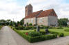 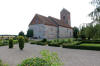 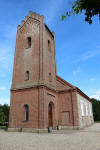


Im Rahmen meiner 2022er Jütland Wikinger Tour war ich mehrere Tage in der Nähe der Kirche einquartiert - 10 km nordwestlich im Seng og Kaffe B&B. Von daher war es mir ein dringendes Bedürfnis diesen außergewöhnlichen Runenstein endlich mal wieder in Augenschein nehmen und ausführlich fotografieren zu können. Ich habe also versucht einen Termin per E-Mail zu vereinbaren, damit die Kirche auch wirklich geöffnet ist. Im ersten Versuch wandte ich mich per E-Mail (memo@km.dk) an die Pfarrerin Mette Mommsen, die mir freundlich antwortete und mich bat mich zum Zwecke der Terminvereinbarung an den Graver Henrik Steen Nielsen zu wenden. Meine entsprechende E-Mail ging bei ihm wohl im SPAM Ordner unter, weshalb ich nochmals nachhakte. Am Freitag, 10.06.2022, war es dann aber soweit. Diesmal konnte ich mir ausführlich Zeit nehmen, da die Graverin Heidi Rasmussen mit etlichen Arbeiten im Kirchhof beschäftigt war und die Kirche solange offen stand. Nochmals auch von dieser Stelle meinen herzlichen Dank für ihr Entgegenkommen! Mange tak! Diese Fotos konnte ich an dem Tag aufnehmen.
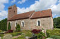 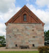 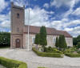 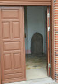 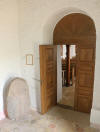 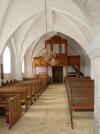 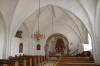 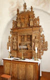 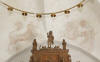 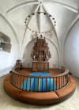 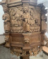


Die Kirche wird erstmals 1524 erwähnt, dürfte aber um das Jahr 1200 aus Granitquadern erbaut worden sein. Der hölzerne Altarbild wurde 1677 von Mette Clausdatter Harder (*? - 19.04.1689 beim Brand im Opernhaus von Schloss Amalienborg umgekommen, bei dem insgesamt 171 Menschen starben) zusammen mit der hölzernen Kanzel (siehe deren Foto - 1676) gestiftet. Sie war die Witwe des Christian Thomsen Fischer (*ca. 1614 - ?.04.1677, seit 1670 mit Frau Harder in 3. Ehe verheiratet, die eine Tochter des königlichen Hofperlenstickers Claus Harder war)
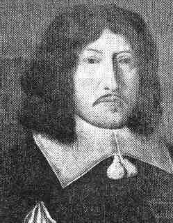
Bildquelle: Geni.com - Lizenz: Public Domainder seit 1664 auf Schloss Silkeborg lebte, das er vom König für seine hohen Kriegsanleihen übertragen bekam. Er war schon zuvor Weinhändler und Hofmundschenk bei König Christian IV. (*12.04.1577 - 28.02.1648, König von 1588 bis 1648)
 Bildquelle:
Wikipedia - Lizenz:
Public Domain
Bildquelle:
Wikipedia - Lizenz:
Public Domain
und seinem Nachfolger König Frederik III. von Dänemark und Norwegen (* 18. März 1609 - 09. Februar 1670, König von 1648 bis 1670)
 Bildquelle:
Königl. Sammlung - Schloss Rosenborg - Lizenz:
Public Domain
Bildquelle:
Königl. Sammlung - Schloss Rosenborg - Lizenz:
Public Domain
war und durch seine Geschäfte enormen Reichtum erwarb. Über dem Altarbild befinden sich Kalkmalereien eines Einhorn (links) und eines Löwen, die 1896 unter Farbe entdeckt wurden.
Bei meinem besagten Besuch am Freitag, 10.06.2022, konnte ich diese Fotos aufnehmen.
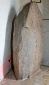 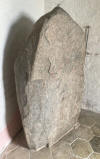 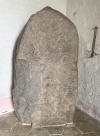 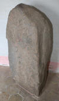 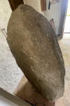 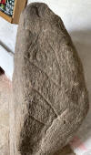 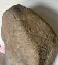 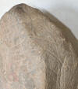 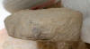 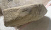


Im Internet findet sich eine Sammlung von sw-Fotos der Entdeckung, Bergung und ersten Ausmalung der Runen/Ausschmückung dieses Runensteines hier und hier - Hier daraus ein Foto "in situ" .
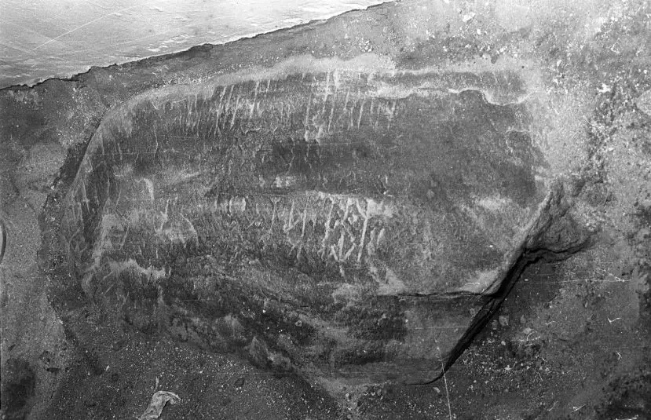
Der Fotograf ist mir unbekannt.
Dieses Foto wurde am 09.09.1966 unmittelbar nach der Bergung des Runensteins durch Erik Moltke aufgenommen.
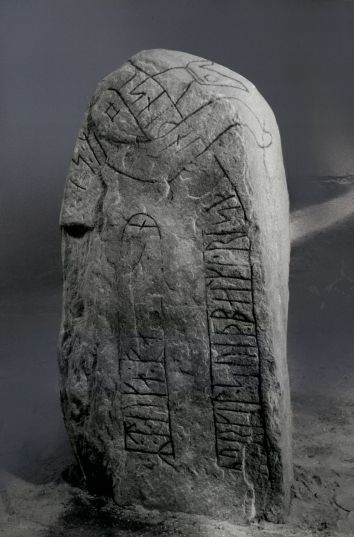
Digitale Sammlung Nationalmuseum Kopenhagen - Lizenz: CC-BY-SA
Im Vorfeld zu dem 2016 erschienenen Buch von Lisbeth M. Imer (*1973, Runologin am Nationalmuseum Kopenhagen) "Danmarks Runesten - en fortælling" reiste sie mit dem Fotografen Roberto Fortuna zur Bestandsaufnahme durch die Lande. Dieser hat den Runenstein unter optimalen Bedingungen aufgenommen und darüber am 07.03.2012 dieses Fotos erzielt.
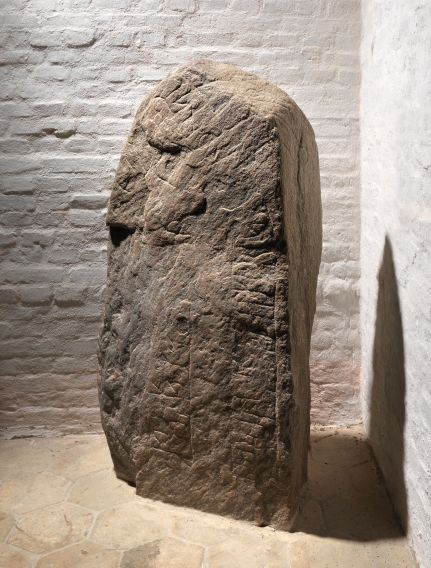
Digitale Sammlung Nationalmuseum Kopenhagen - Lizenz: CC-BY-SA
Die Informationen zu diesem Runenstein aus der dänischen Runendatenbank finden sich hier.
Der entsprechende Eintrag in "Fund og Fortidsminder" ist hier verlinkt. Darin ist inzwischen dieser Zustandsbericht des Steinrestaurators Leif Vognsen aus dem Jahr 2018 eingebettet.
Über diesen Link finden sich zu dem Runenstein Informationen des Forschungsprojektes "Runes" der Akademie der Wissenschaften zu Göttingen.
Auf den Webseiten des Nationalmuseum - Danmarks Kirker - kann man eine in dänischer Sprache gehaltene 22-seitige, bebilderte Abhandlung als pdf-Datei zur Baugeschichte/Innenausstattung der Kirche von Sporup aus den Jahren 1990-91 abrufen.